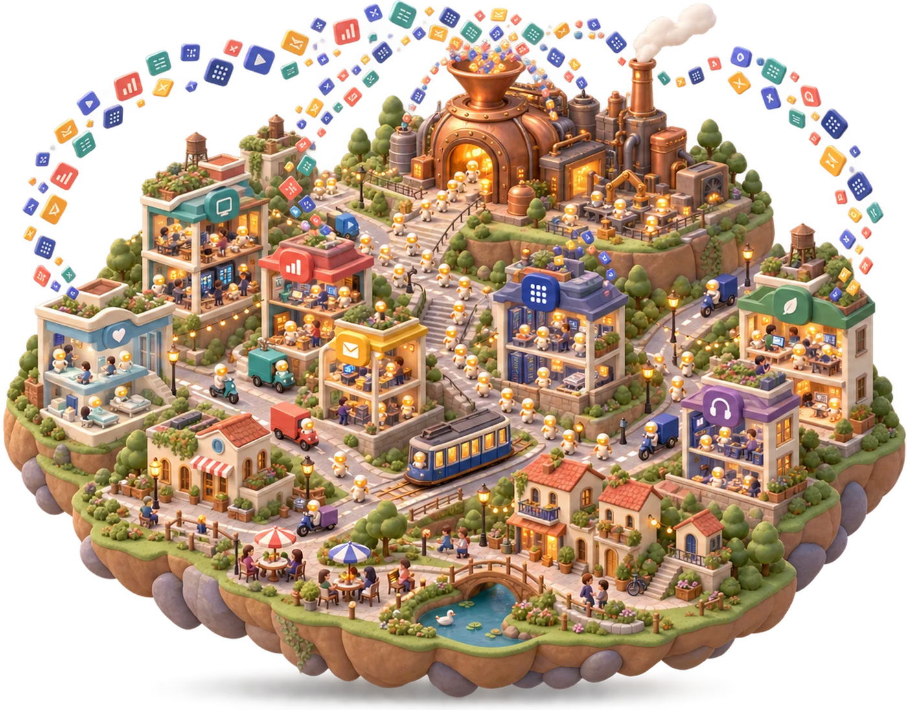

The Vision of MiniCorp

From chatbot to long-running agent, the path to AGI has unfolded in stages. The first was the chatbot: systems that can perform Q&A. The second is autonomous agents: systems that act, using tools, operating software, and completing long-horizon tasks end to end. The third is autonomous companies, where agents go beyond the tasks handed to them and run a business itself: setting strategic direction, making decisions, coordinating work, and keeping an organization alive and profitable over time. Autonomous companies are the last mile of AGI.
Getting from the second stage to the third is a qualitative leap, not a matter of scale. Today’s leading benchmarks, such as τ-bench [Yao et al., 2024], SWE-bench [Jimenez et al., 2024], GAIA [Mialon et al., 2023], and OSWorld [Xie et al., 2024], all measure agent capability on tasks that differ from running a company along four axes:
- They have an oracle. SWE-bench has passing tests; τ-bench has a correct final database state. Running a company is full of open-ended questions that have no ground truth. Success is a distribution over outcomes, and the same decision can be right in one market and ruinous in another.
- Their horizon is minutes to hours, not months to years. The failures that matter most in a company compound slowly and surface long after the decision that caused them.
- They are single-agent and single-role. There is no org structure, no division of labor, no disagreement between two parties holding partial information and different objectives. Coordination is not a harder version of execution; it is a different problem.
- They reset. Every episode starts clean. But accumulated consequence is what makes a company a company. The customer lost in March is still lost in November, and the shortcut taken last quarter is the incident you’re paged for now.
To train LLMs as real digital workers capable of running autonomous companies, models need real enterprise data and high-fidelity simulated workspaces to train in, and both are among the hardest things to obtain. The most valuable enterprise data is internal (employee conversations, email, company records) and carries privacy obligations that rule out training. Hiring domain experts to annotate is expensive, slow, and structurally biased toward short-horizon, well-specified tasks. Records from bankrupt firms are genuine enterprise data, but they are costly to acquire and demand substantial cleaning and mining before they can serve as a benchmark or as training data.
The mission of MiniCorp is to remove this barrier to training autonomous agents, and to move a real step closer to AGI. We are building synthetic companies: platforms that continuously generate enterprise data, and simulated agentic environments that interact with the external world rather than sitting in a closed sandbox. Instead of waiting for real organizations to open their records, we are building the organizations that can be opened: running, persistent, and instrumented, so that agents can learn from them and be measured against them. Agents that can run companies will have to be trained inside a company’s workspace. We’re building the ones where that’s possible.